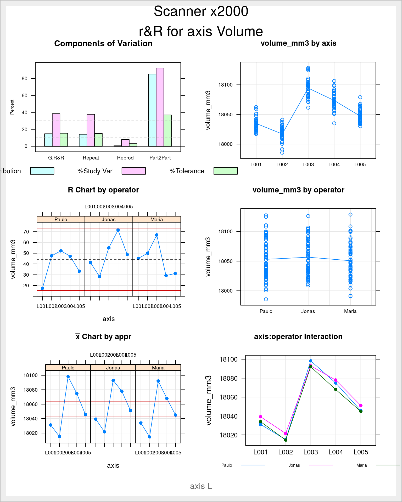
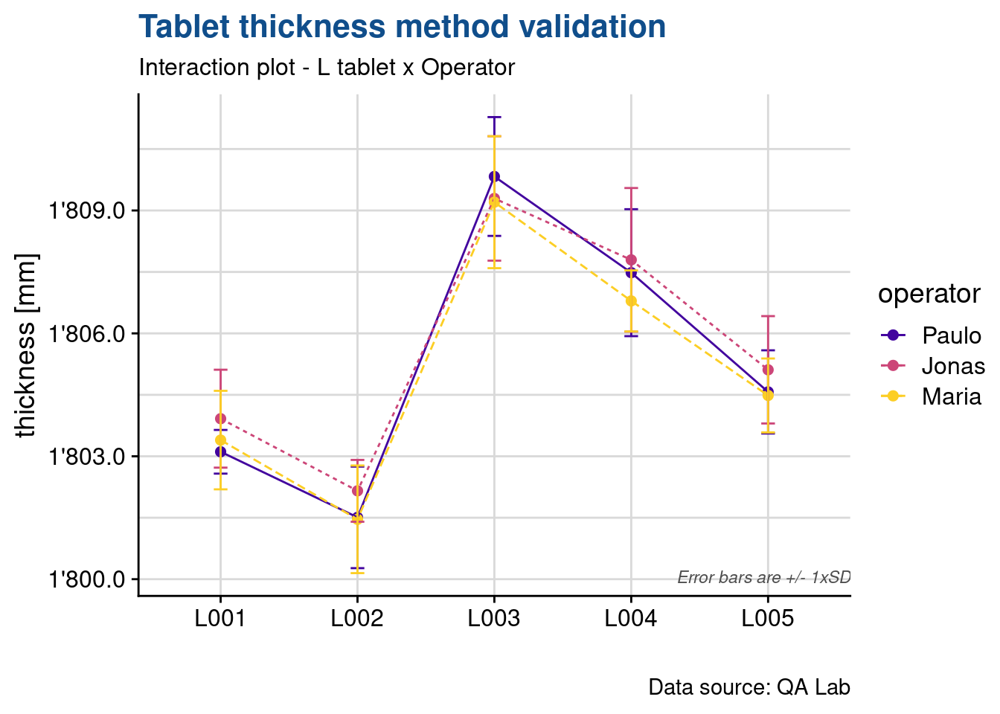

Measurement System Analysis
Validation of a measurement device
Robustness
In the Six Sigma chapter we presented the Ishikawa diagram 2. The identification of the factors for which to verify a measurement system robustness is a typical case where we can make good use of such tool and properly list the environmental factors that may influence the measurement.
Linearity
The Quality Control Manager of a Juice producing plant acquired a faster dry matter content measurement device from the supplier DRX. An important reduction of the control time was the rational for the acquisition and now before finally putting it into operation its performance is being assessed and validated.

Figure 1: juice bottling line
In this case study we will look into the assessment of the linearity which is the difference in average bias throughout the measurement range.
Dry matter content for the company top seller juices have around 12% dry matter as for example Premium Fresh Apple juice: 12.4 % and Austrian Beetroot: 13.2% and some other specialities may have a higher content up such as Organic Carrot with 16.3%.
It has been decided to start by checking the equipement in the range of 10 to 20% dry matter content.
library(tidyverse)
library(readxl)
library(janitor)
library(scales)
library(stats)
library(SixSigma)
library(knitr)
filter <- dplyr::filter
select <- dplyr::selectData loading
juices <- read_excel(path = "../industRial/data-raw/juices.xlsx")
juices <- juices %>%
mutate(bias = DRX - Ref)Plot of bias data
juices %>%
ggplot(aes(x = Ref, y = bias)) +
geom_point() +
geom_smooth(method = "lm", se = T, ) +
theme_light() +
# facet_grid(~dissolution) +
labs(title = "Dry matter method validation",
subtitle = "Gage Linearity",
caption = "Dataset: juices233A, Operator: S.Jonathan)")
The linear model seems well adapted in this case, seing the position of the slope close to the averages of each level of the factor. Nevertheless the slope is rather steep showing a clear increase of the bias (in the negative direction) with the increase in dry matter content.
Model of bias vs reference value
juices_lm <- lm(bias ~ Ref,
data = juices)
summary(juices_lm)
Call:
lm(formula = bias ~ Ref, data = juices)
Residuals:
Min 1Q Median 3Q Max
-0.127294 -0.033944 0.002439 0.027884 0.162171
Coefficients:
Estimate Std. Error t value Pr(>|t|)
(Intercept) 0.182977 0.031147 5.875 3.04e-07 ***
Ref -0.026744 0.002001 -13.364 < 2e-16 ***
---
Signif. codes: 0 '***' 0.001 '**' 0.01 '*' 0.05 '.' 0.1 ' ' 1
Residual standard error: 0.06002 on 52 degrees of freedom
Multiple R-squared: 0.7745, Adjusted R-squared: 0.7702
F-statistic: 178.6 on 1 and 52 DF, p-value: < 2.2e-16Model of bias check
We observe a very high correlation of the model with an R squared of 82%.
par(mfrow = c(2, 2))
plot(juices_lm)
The qq plot shows a strong deviation from the normality for the 2nd upper quantile. Care should be taken in defining the bias for the 25% dissolution.
juices_aov <- aov(juices_lm)
summary(juices_aov) Df Sum Sq Mean Sq F value Pr(>F)
Ref 1 0.6433 0.6433 178.6 <2e-16 ***
Residuals 52 0.1873 0.0036
---
Signif. codes: 0 '***' 0.001 '**' 0.01 '*' 0.05 '.' 0.1 ' ' 1As expected the anova confirms strong influence of the dissolution level on the bias.
Trueness
(Bias)
juices_bias <- juices %>%
group_by(target) %>%
summarise(av_bias = mean(bias))
juices_bias %>%
select(target, av_bias) %>%
kable(align = "c")| target | av_bias |
|---|---|
| 10 | -0.0855556 |
| 15 | -0.2177778 |
| 20 | -0.3527778 |
Precision
reproductibility & reproducibility
Objective
The objective of this document is to assess the scope of utilisation of the r&R for a measurement method using the Six Sigma package from R. A comparison with base R anova and with Minitab r&R is also done. This report is accompaigned by a “CheatSheet” excel file with formulas allowing to understand and easily confirm the SixSigma package calculations.
The randomization is an important aspect that was not mentionned here but that needs to be taken in consideration in the data collection.
Data loading
We use here the data from the axis volume method validation:
axis <- read_excel("../industRial/data-raw/rnR_case_study.xlsx") %>% clean_names() %>%
mutate(size = as_factor(size)) %>%
mutate(axis = as_factor(axis)) %>%
mutate(operator = as_factor(operator)) %>%
mutate(day = fct_inorder(day))axis_L <- axis %>%
filter(size == "L")Base Anova
We’re feeding the aov function from the stats package with operator and axis factors.
axis_L_lm <- lm(
volume_mm3 ~ (
# main effects
axis +
operator +
# 2nd order interactions
operator:axis
),
data = axis_L
)
axis_L_aov <- aov(axis_L_lm)
summary(axis_L_aov) Df Sum Sq Mean Sq F value Pr(>F)
axis 4 170707 42677 271.450 <2e-16 ***
operator 2 1313 657 4.176 0.0167 *
axis:operator 8 1122 140 0.892 0.5237
Residuals 210 33016 157
---
Signif. codes: 0 '***' 0.001 '**' 0.01 '*' 0.05 '.' 0.1 ' ' 1- axis (Part): The variation that comes from the parts, with 5 levels in this case
- operator: The variation that comes from the operators, with 3 levels in this case
- Operator*Part: The variation that comes from the operator and part interaction. An interaction exists when an operator measures different parts differently.
- repeatability (or error, or residuals): The variation that is not explained by part, operator, or the operator and part interaction. Variance
- n: number of replicants, 15 in this case (not presented in the table)
These are used for establishing the Variance Components and Study Variation tables that are exactly the same that are obtained with Minitab.
Study
Below we’re recreating the same analysis with the ss.rr function from the Six Sigma package. As the function allows to input the limits we’re also providing in the function arguments the current upper and lower limit of the specification.
axis L 18’000mm3 +/- 250mm3 (18.0ml +/- 0.25ml)
axis_L_rr <- ss.rr(
data = axis_L,
var = volume_mm3,
part = axis,
appr = operator,
alphaLim = 1,
errorTerm = "repeatability", # very important otherwise F test not identical to base aov
main = "Scanner x2000\nr&R for axis Volume",
sub = "axis L",
lsl = 17750,
usl = 18250
)Complete model (with interaction):
Df Sum Sq Mean Sq F value Pr(>F)
axis 4 170707 42677 271.450 <2e-16
operator 2 1313 657 4.176 0.0167
axis:operator 8 1122 140 0.892 0.5237
Repeatability 210 33016 157
Total 224 206158
alpha for removing interaction: 1
Gage R&R
VarComp %Contrib
Total Gage R&R 164.10066 14.79
Repeatability 157.21730 14.17
Reproducibility 6.88336 0.62
operator 6.88336 0.62
axis:operator 0.00000 0.00
Part-To-Part 945.25173 85.21
Total Variation 1109.35239 100.00
VarComp StdDev StudyVar %StudyVar %Tolerance
Total Gage R&R 164.10066 12.810178 76.86107 38.46 15.37
Repeatability 157.21730 12.538632 75.23179 37.65 15.05
Reproducibility 6.88336 2.623616 15.74170 7.88 3.15
operator 6.88336 2.623616 15.74170 7.88 3.15
axis:operator 0.00000 0.000000 0.00000 0.00 0.00
Part-To-Part 945.25173 30.744946 184.46968 92.31 36.89
Total Variation 1109.35239 33.306942 199.84165 100.00 39.97
Number of Distinct Categories = 3 
We can observe that the SixSigma package recreates exactly the same anova table, just calling Repeatability to the Residuals and adding an additional line with the total degrees of freedom and the total sum of squares.
Note that the argument alphaLim has been set to 1 to avoid suppressing the interaction which is in this case non significative.
Acceptance on Variance
Variance components assess the amount of variation contributed by each source of measurement error, plus the contribution of part-to-part variability.
- total gage r&R: the sum of the repeatability and the reproducibility variance components
- repeatability: how much variability is caused by the measurement device (the same operator measures the same part many times, using the same gage). The repeteability can be measured directly from the Anova table from the residual mean squares
- reproducibility: how much variation is caused by the differences between operators (different operators measure the same part many times, using the same gage)
- operators: the operators part of the reproducibility is the operators variation minus the interaction divided by the number of different parts times the replicants (zero if negative)
- parts:operators: the interaction part of of the reproducibility is the interaction minus the repeatability divided by the number of replicants (zero if negative)
- part-to-part: the variability due to different parts. Ideally, very little should be due to repeatability and reproducibility. Differences between parts should account for most of the variability (when the %Contribution from part-to-part variation is high, the measurement system can reliably distinguish between parts).
The sum of the individual variance components equals the total variation.
Criteria for measurement system acceptance:
To evaluate your process variation, compare the Total Gage R&R contribution in the %Contrib column with the values in the list below:
- Less than 1%: the measurement system is acceptable
- Between 1% and 9%: the measurement system is acceptable depending on the application, the cost of the measurement device, cost of repair, or other factors
- Greater than 9%: the measurement system is not acceptable and should be improved.
Acceptance on SD
The study variation table is established by calculating the square root of each variance (the standard deviation) and by multiplying it by 6 (the six sigma) and then again by comparing each variation with the total variation. Standard deviations are usualy more speaking to the industry professionals. This table also provides a comparison with the specification.
Criteria for measurement system acceptance:
According to the Automotive Industry Action Group AIAG guidelines, if your system variation is less than 10% of the process variation, then it is acceptable.
To evaluate your process variation, compare the Total Gage R&R contribution in the %StudyVar column with the values in the list below:
- Less than 10%: the measurement system is acceptable
- Between 10% and 30%: the measurement system is acceptable depending on the application, the cost of the measurement device, cost of repair, or other factors
- Greater that 30%: the measurement system is not acceptable and should be improved.
If the p-value for the operator and part interaction is 0.05 or higher, the system removes the interaction because it is not significant and generates a second ANOVA table without the interaction.
The AIAG also states that the number of distinct categories into which the measurement system divides process output should be greater or equal to 5.
The part to part variation is high which is what is expected in a study like this.
In our specific example we observe that the device cannot be accepted as the Study variation for the Total Gage r&R is 38.46% thus much higher than 30%. Furhtermore the number of distinc categories is only of 3.
Finaly to be noted that the total variation rather low when compared with the specification.
In a nutshell two questions are answered:
can the method be used to assess process performance: no the measurement system variation equals 38.4% of the process variation,
can the method be used to sort good parts from bad: yes but can be improved, the measurement system variation equals 15.3% of the tolerance.
Interaction plots
The Six Sigma package plots are similar to the interaction plots provided by other DoE packages but don’t have error bars. These can nevertheless easily be established on a needed basis as in the example below where we’re recreating the axis:operator interaction plot with a +/- 1 standard deviation error bars.
axis_L %>%
group_by(axis, operator) %>%
summarise(vol_mean = mean(volume_mm3), vol_sd = sd(volume_mm3)) %>%
ggplot(aes(x = axis, y = vol_mean, color = operator)) +
geom_point(aes(group = operator), size = 2) +
geom_line(aes(group = operator, linetype = operator)) +
geom_errorbar(aes(ymin = vol_mean - vol_sd,
ymax = vol_mean + vol_sd),
width = .1) +
scale_y_continuous(breaks = seq(10000, 20000, 10),
labels = label_number(big.mark = "'")) +
scale_color_viridis_d(option = "C", begin = 0.1, end = 0.9) +
# coord_cartesian(ylim = c(17950, 18150)) +
annotate(geom = "text", x = Inf, y = -Inf, label = "Error bars are +/- 1xSD",
hjust = 1, vjust = -1, colour = "grey30", size = 3,
fontface = "italic") +
theme_light() +
labs(title = "axis volume method validation",
subtitle = "Interaction plot - L axis x Operator",
x = "",
y = "Volume [mm]",
caption = "Data source: QA Lab")
test <- axis_L %>%
group_by(axis, operator) %>%
summarise(vol_mean = mean(volume_mm3), vol_sd = sd(volume_mm3))Negative Variations
Two important limitations exist in the current approach:
- when the operators reproducibility is negative it is converted to zero.
(Montgomery 2012) in page 557 adresses this case in the following way:
Notice that the estimate of one of the variance components,is negative. This is certainly not reasonable because by definition variances are nonnegative. Unfortunately, negative estimates of variance components can result when we use the analysis of variance method of estimation (this is considered one of its drawbacks). We can deal with this negative result in a variety of ways:
1) one possibility is to assume that the negative estimate means that the variance component is really zero and just set it to zero, leaving the other nonnegative estimates unchanged.
2) Another approach is to estimate the variance components with a method that assures nonnegative estimates (this can be done with the maximum likelihood approach).
3) Finally, we could note that the P-value for the interaction term … is very large, take this as evidence that really is zero and that there is no interaction effect, and then fit a reduced model of the form that does not include the interaction term. This is a relatively easy approach and one that often works nearly as well as more sophisticated methods.
This final approach is also what the SixSigma package creators have foreseen and if we leave the argument alphaLim empty the non significant terms will be suppressed from the model, the Anova recalculated and the remaining tables updated accordingly. This can be finetuned with the argument alphaLim. Usually we consider a p value of 0.05 but we recommend to start with higher values such as 0.1 or 0.2 to avoid suppressing too quickly the factor which would result in a transfer of their variability into the repeatability.
axis_L_rr <- ss.rr(
data = axis_L,
var = volume_mm3,
part = axis,
appr = operator,
alphaLim = 0.2, # instead of 0.05 it is recommended to start higher
errorTerm = "repeatability",
main = "Keyence KEYENCE VR-5200\nr&R for Pod Volume",
sub = "Pod L",
lsl = 17750,
usl = 18250
)Complete model (with interaction):
Df Sum Sq Mean Sq F value Pr(>F)
axis 4 170707 42677 271.450 <2e-16
operator 2 1313 657 4.176 0.0167
axis:operator 8 1122 140 0.892 0.5237
Repeatability 210 33016 157
Total 224 206158
alpha for removing interaction: 0.2
Reduced model (without interaction):
Df Sum Sq Mean Sq F value Pr(>F)
axis 4 170707 42677 272.526 <2e-16
operator 2 1313 657 4.193 0.0163
Repeatability 218 34138 157
Total 224 206158
Gage R&R
VarComp %Contrib
Total Gage R&R 163.262567 14.73
Repeatability 156.596490 14.13
Reproducibility 6.666077 0.60
operator 6.666077 0.60
Part-To-Part 944.889591 85.27
Total Variation 1108.152158 100.00
VarComp StdDev StudyVar %StudyVar %Tolerance
Total Gage R&R 163.262567 12.777424 76.66454 38.38 15.33
Repeatability 156.596490 12.513852 75.08311 37.59 15.02
Reproducibility 6.666077 2.581875 15.49125 7.76 3.10
operator 6.666077 2.581875 15.49125 7.76 3.10
Part-To-Part 944.889591 30.739056 184.43434 92.34 36.89
Total Variation 1108.152158 33.288919 199.73352 100.00 39.95
Number of Distinct Categories = 3 
In our case when comparing the total gage r&R with and without the interaction we see it changing from 38.46% to 38.38%.
Beyond two factors
- The ss.rr function only accepts 2 factors so it is not possible to obtain all the tables and plots with for example the day as a factor. This significantly limits the calculation of the total uncertainty for some measurement methods. Next steps in our study will be to prepare an R function to deal with more than 2 factors.
Conclusions
The Six Sigma package r&R approach can be applied with no issue to simple cases with 2 factors (e.g. operators and parts) where the Variance Component of the Reproducibility is not negative.
The intepretation and acceptance criteria have been adapted from the Minitab help site that includes the typical industry interpretation and tresholds.
Uncertainty
A final step in the validation of our measurement device is now the calculation of the total measurement uncertainty.
In some reports the terminology uncertainty is prefered instead of gage r&R. In this case the formula usually used to evaluate the measurement uncertainty is:
\[ u^2=u_{repeat.}^2+ u_{reprod.}^2+ u_{cal.}^2 \]
where the repeatability and reproducibility members can be obtained from the variances calculated in the r&R study
\[ u_{reprod.}^2 = σ_{reprod.}^2\\ u_{repeat.}^2 = σ_{repeat.}^2 \]
From the variance components table in our example we have:
\[ σ_{repeat.}^2 = 157.21\\ σ_{reprod.}^2 = 6.89 \]
The calibration uncertainty has in this case been obtained from the equipment notice:
\[ u_(cal) = 200\mu m^3 <=> 200e^{-9} <=> 2.10^{-7}mm^3 <=> 4.10^{-14} \]
we consider this value negligible, thus we have a final uncertainty of:
\[ u = \sqrt[2]{157.21 + 6.89}\\ u = 12.81015 \]
Finally what is usually reported is the expanded uncertainty corresponding to 2 standard deviations. To be recalled that +/- 2 std corresponds to 95% of the values when a repeative measurement is done. In this case we have \(U = 2*u\) which rounded gives \(U = 25.6\)
For a specific measurement of say 18’000 we then say: the axis volume is 18’000 mm^3 plus or minus 25.6 mm3, at the 95 percent confidence level. Or written in short 18’000 mm^3 ± 25.6 mm^3, at a level of confidence of 95%
Knowing that the specification is [17’750; 18’250] \(mm^3\) we have a range of 500 which when compared to 2 * 25.6 = 51.2 is aproximately 10 times. This is another way of looking into the ratio between method variation and specification, that was in fact 15.37% in the study variation table because there it was considered 3 standard deviations.